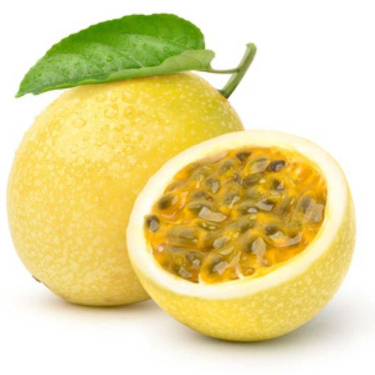

Yellow passion

| Index |
|---|
| Short description |
| Nutritional value |
| Health benefits |
| Best time to eat |
| Who shoud avoid |
| Fun fact |
Short Description
Yellow passion fruit is a tropical fruit with a tangy flavor and aromatic pulp. It is commonly used in juices and desserts.
Nutritional Value
| Nutrient | Amount |
|---|---|
| Calories | 95 kcal |
| Carbohydrates | 23 g |
| Fiber | 10 g |
| Vitamin C | 30% |
| Vitamin A | Present |
| Antioxidants | High |
Health Benefits
- Improves digestion
- Boosts immunity
- Improves sleep quality
- Supports heart health
Best Time to Eat
Best eaten:
- Morning or afternoon
- As a juice or fresh pulp
Avoid at night if acidity-prone.
Who Should Avoid
- People with gastric problems
- Those allergic to passion fruit
- People on sedative medicines
Fun Fact
- Passion fruit name comes from missionaries
- Seeds are edible and nutritious
- Used to reduce anxiety naturally